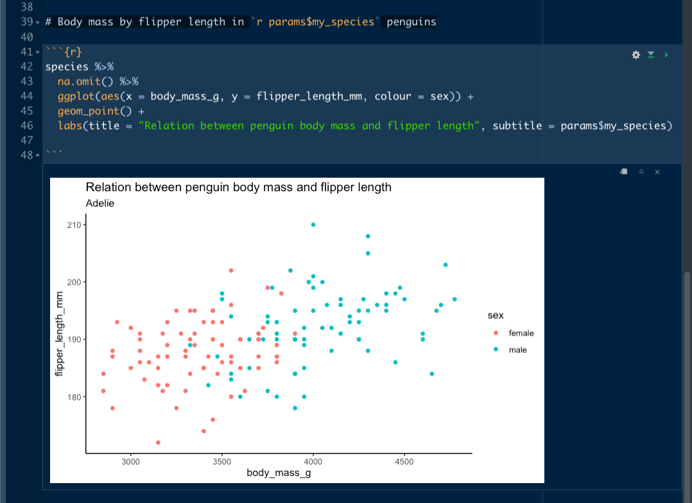

How to use parameters and purrr to render many Rmd reports
I am beginning a project where we want to create a distill site that has lots of profile pages that all have the same format but pull different data from a dataframe. Here I am learning how to use set up parameters within RMarkdown so that I can use purrr to render many reports at once.
how to customise your yaml
yaml stands for “yet another markup language” and it is the code that you see at the top of your RMarkdown document that is between the sets of dashes.
When you open a new Rmd document, the yaml just contains fields to insert the title, author, and date that your document was created and some info about what kind of output your want your Rmd to knit to, but you can customise the yaml to specify lots of different characteristics of your Rmd document.

In this yaml, I have set the output to be html and added the hpstr theme from the prettydoc package. I have also set how big I want the figures to be in my knitted document. Other options include adding a table of contents and allowing readers to show and hide code see details in the Yihui’s rmarkdown book here.
The new piece here is adding “params” (more about Rmd/params here. Eventually I want to create a separate report for each type of penguin species so I have set the parameter I am interested in as my_species. As a first run, I am interested in Adelie penguins.
how to write a basic report
Before I can render lots of reports, I need to write the code and make it run on the Adelie species. The first chunk of code in my report loads the packages needed, sets my default ggplot theme and loads in the penguin data. Then I use the species params that I set in the yaml to filter the penguins for only Adelie, creating a new species dataframe.

The next chunk uses that species dataframe to make a plot of body mass by flipper length. I can also refer to the params I set to make the level 1 header and subtitle of my plot reflect which species of penguin are being plotted.

When I knit the document I end up with a pretty nice looking report about Adelie penguins see RPubs here.
how to render many reports
Now that my report is working for one level of species and I have set params within my yaml, I can use purrr to automagically render a separate report for each species in the penguins dataset. I start by opening a new .R script and making a tibble that has three variables…
- species (the unique values of species from the penguin data)
- filename (a combo of penguin-report- and each of the species with .html extension)
- params (map across each levels of species)

Then I take that tibble and pipe it into a select() function, selecting just the filename (which is renamed as output_file at the same time) and params. Pipe those two variables into pwalk(), which renders the parameterised_penguins.Rmd for each level of the params. When I run the code in my knit_many_reports.R script, I end up with 3 x .html reports, one for each species, in my files tab. Magic!!

note: I am still getting my head around how purrr works, but my understanding is that walk() is a lot like map(), in that it iterates over a list of things, but it is useful when you want to keep the output of the code you are iterating (i.e. generating reports). I have used it before here to test out different ggplot palettes. pwalk() is like walk() except that there are multiple arguments, in this case both the output_file and each of the params.